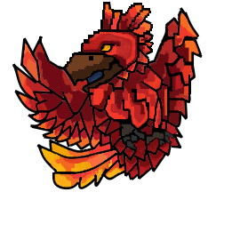

Inicio
Software
Sobre Zearphenix
Donar
Contenido del recuadro
ZearPhenix

Sobre Zearphenix:
ZearPhenix es una pagina creada para guardar cualquier software que cree, a su vez dando la posibilidad que lo descarguen otras personas. La opcion de "Donar" está desabilitada, si intenta acceder solo será reenviado a "Inicio".
© 2025 ZearPhenix